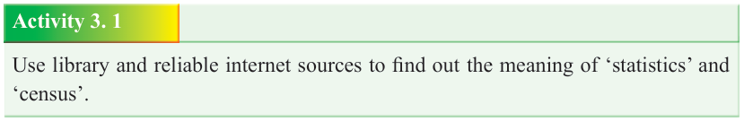

Form Two
Tanzania Institute of Education (TIE)


Bible Knowledge
41

Census aimed not only getting the numbers of men who could be able to go to war but also it was a preparation for equitable distribution of the Promised Land.
Objectives of statistics and census in the society
Statistics can be defined as a scientific method of collecting, interpreting, presenting and analysing data for the purposes of applying the information gathered for economic and social welfare. Statistics are also the facts and figures obtained while collecting specific information from the intended field. Data collection in statistics is a systematic process of gathering information or measurements.
In the ancient Israel, statistical facts were obtained directly from the field or people involved. In today’s context, statistics can equally be obtained from recorded sources such as books, newspapers, magazines, statistical abstract, and many other sources of data. The government, the Church, different institutions and organizations need statistical data for planning and implementing different projects for the wellbeing of their people. Statistics are also needed and used in family and individual’s life.
Census on its part, is the process of systematically collecting, recording, and compiling population information about members of a given population, economic facts, agricultural and social data usually displayed in the form of statistics. In
Tanzania, national population census is conducted periodically, after every ten years. Data are the facts and figures that are collected, analysed, and summarized for presentation and interpretation. Data may be classified as either quantitative or qualitative. Quantitative data measures either how much or how many of something,

and qualitative data provide labels, or names, experiences, opinions and attitudes in

relation to the item categories studied. Both statistics and census are very important phenomena for the development of the society. Both government and private sectors need statistical and census information to meet and implement their goals.

Activity 3. 1
Use library and reliable internet sources to find out the meaning of ‘statistics’ and
‘census’.
Methods of data collection
There are various methods of data collection, the methods include: (1) Quantitative data collection- This method involves collecting numerical information. It